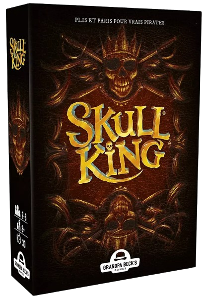
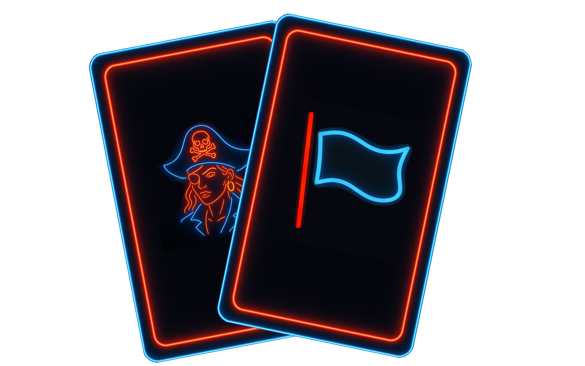

Le sujet
Il nous a été demandé d'adapter et de programmer, en duo, ce jeu de cartes convivial et imprévisible sur ordinateur, en utilisant le langage C++ et ce dans un délai imparti de quatre semaines ! Si vous voulez en apprendre plus sur le périple que furent ces quatre semaines de développement n'hésitez pas à consulter la section "PROJET" du site !
Skull King, c'est quoi ?
Dans Skull King, vous êtes un pirate avide d'argent, qui défie ses adversaires par le jeu sur la vieille table d'une taverne. Les pirates se trouvent en compétition pendant 10 manches. À chacune d'elles, les joueurs doivent indiquer le nombre de plis qu'ils estiment pouvoir réaliser au cours de la manche. Il faudra ensuite s'en approcher au plus près possible sous peine de perdre beaucoup de points… Celui qui n'y arrive pas, parce qu'il fait trop ou pas assez de plis, perd à la fois gloire et prestige, et ne rien pronostiquer peut s'avérer lucratif, mais aussi très risqué… Alors que chacun ne dispose que d'une seule carte pendant la première manche, une carte supplémentaire vient s'y ajouter à chaque manche suivante. Au cours de chaque manche, les joueurs essaient d'accumuler le plus de points possibles. Celui qui en aura accumulé le plus à l'issue des 10 manches, sera déclaré Roi des Pirates !
Les cartes
Chaque joueur dispose d'un ensemble de cartes réparties en familles de couleurs et cartes spéciales. Les cartes numérotées vont de 1 à 14 et sont divisées en quatre couleurs : jaune, verte et bleu pour les couleurs communes, noire plus forte que ces dernières et enfin les cartes spéciales. Chaque carte spéciale est capable de renverser le cours d'un tour en un clin d'oeil ! Ces cartes spéciales sont les pirates, capables de gagner n'importe quelle bataille, sauf face au Roi des mers en personne, le Skull King, champion en titre impitoyable et presque invincible, sa seule faiblesse réside dans l'envoûtante sirène qui est la seule capable de le battre... Il ne faut pas non plus oublier la reine des pillages, la Tigresse, bien plus rusée que ses pairs, elle sait se retirer quand la situation devient complexe. Mais ne la sous-estimez pas : c'est une redoutable pirate. Enfin vous aurez la carte Fuite, permettant de prendre la poudre d'escampette quand les choses se corsent !
